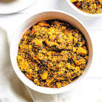

Egusi Soup Recipe
Egusi soup is unarguably one of the most popular Nigeria soups. It is a traditional soup that combines blended melon seed, pepper, leafy vegetables and meat or fish.
It is very tasty and can be spicy too, depending in your preference.
Ingredients
Guidelines for cooking Egusi
- Blend the pepper, tomatoes and onion together into a mix.
- Blend the egusi melon if it isn't ground already.
- Heat the oil in a pot or pan - make sure to not overheat or bleach it.
- Add the blended pepper mix into the heated oil and fry for 15 to 20 minutes until it is well cooked.
- Then add the ground egusi melon. It is important to not stir the egusi at this point; give it time to curdle. Once it has curdled for about 15 minutes, stir it briefly, then add your meat stock and your meat or protein and leave to cook for another 10 to 15 minutes.
- Cook until properly done and your egusi is ready to be served with any swallow of your choice.